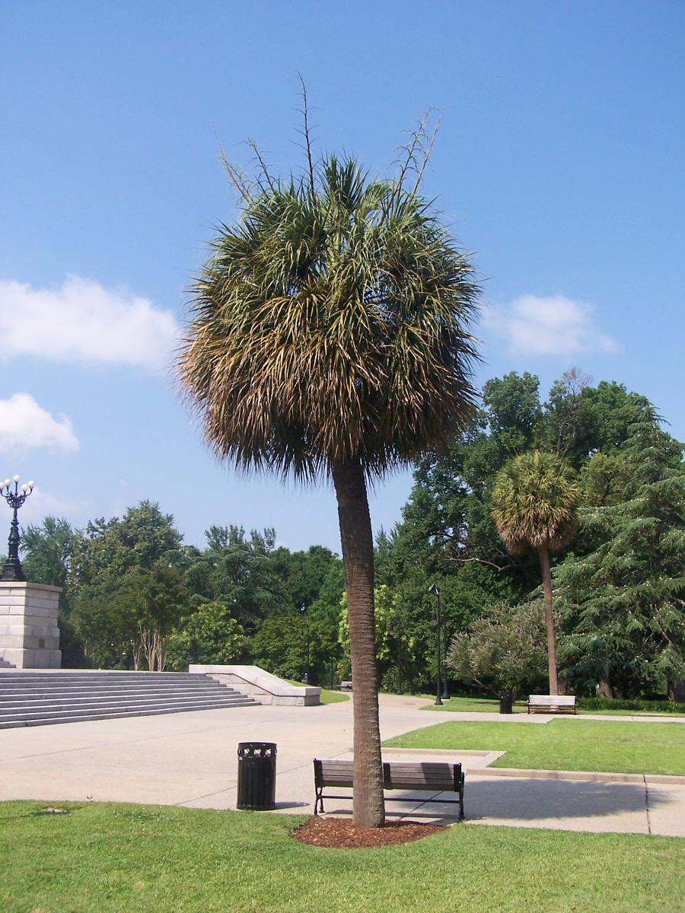

Settled by the English in 1670, South Carolina became the eighth state to ratify the U.S. Constitution in 1788. Its early economy was largely agricultural, benefitting from the area’s fertile soil. Plantation farmers relied on the slave trade for cheap labor to maximize profits. By 1730, people of African descent made up two-thirds of the colony’s population. South Carolina became the first state to secede from the Union in 1861 and was the site of the first shots of the Civil War–the shelling of the federally held Fort Sumter by Confederate troops on April 12, 1861. Today, South Carolina's coastline near Myrtle Beach has developed into one of the premier resort destinations on the East Coast and has over 100 golf courses. Famous South Carolinians include musicians James Brown, Chubby Checker and Dizzy Gillespie, novelist Pat Conroy, boxer Joe Frazier, tennis champion Althea Gibson, politician Jesse Jackson and long-serving U.S. Senator Strom Thurmond.
| Date of Statehood | Capital | Population | Size |
|---|---|---|---|
| May 23, 1788 | Columbia | 5.12 million | 32,020 square miles |
Dum Spiro Spero (While I Breathe, I Hope)
Yellow Jessamine
Carolina Wren
Palmetto
Interesting facts